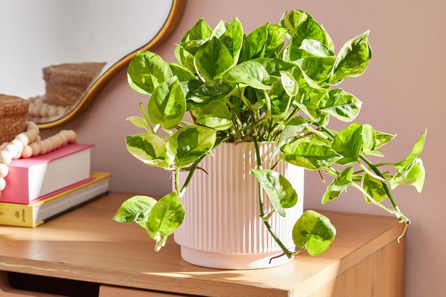

The Joy of House Plants
House plants are far more than just pretty decorations—they breathe life, color, and a soothing energy into any room. Whether you’re a seasoned plant enthusiast or just starting out, adding a touch of greenery to your home can work wonders for your overall well-being. Not only do they purify the air, but they also have a knack for lifting your spirits, making them a simple yet impactful way to transform your living space.

Tending to house plants can also be a deeply calming and therapeutic experience. The routine of watering, pruning, and repotting offers a chance to slow down and focus, helping to ease stress and encourage mindfulness. Plus, there’s something incredibly satisfying about watching your plants flourish under your care. If you’re new to the world of house plants, consider starting with easy-to-care-for options like Pothos or ZZ Plants—they’re resilient, adaptable, and perfect for beginners.
Beyond their aesthetic and emotional benefits, house plants can also foster a deeper connection to nature, even in urban settings. They remind us to pause and appreciate the small, steady rhythms of growth and change. In a fast-paced world, having a little greenery around can ground us, offering a sense of balance and harmony in our daily lives. So, whether you’re looking to brighten up a corner or create a lush indoor oasis, house plants are a timeless and rewarding addition to any home.
Leave a Comment